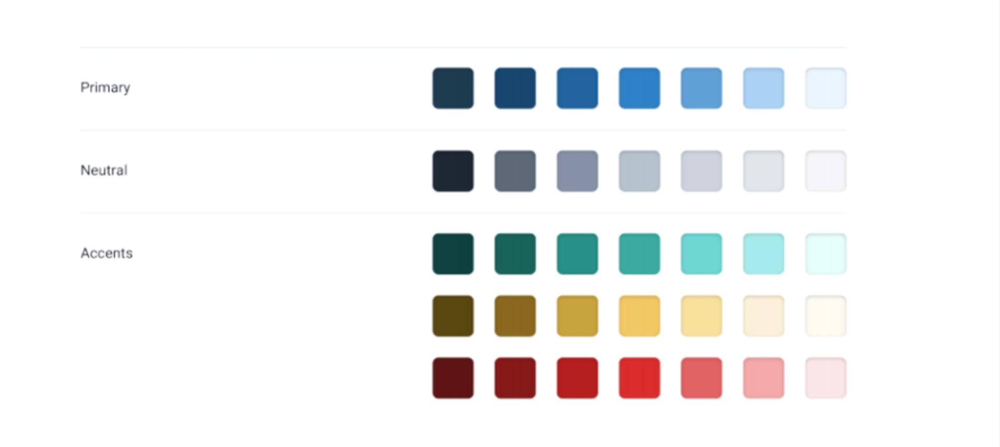
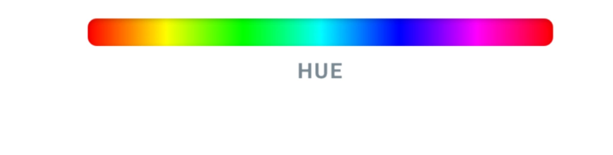
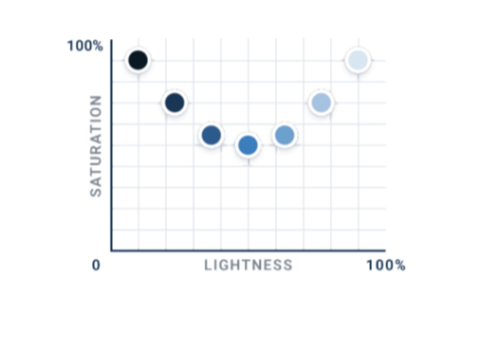

Having many different colors makes consistency difficult and requires a high degree of skill. It also reduces the effectiveness of accents or "calls to action" later.
Having a single primary (as in important, not red, yellow, blue) color will help create a more cohesive design scheme - Choose your starting color by
If you're doing any sort of form input, normally you will need some colors to indicate correctness of the data
Think red, yellow, blue, green colors for things like error, warning, info, success messages and boxes
Having another secondary color is fine. But takes some extra skill
Avoid colors which don't go well together. Online color choosers or adobe colors will help find complementary colors, which will work well.
Complementary colors will help bring attention to information, headings, buttons etc.
Using different shades of your one color is a good way of distinguishing different elements. For example, if you chose a dark blue as a primary color, you might use lighter or darker versions for headers, links, names...whatever...
Create 8 to 10 shades for scaling from white to black (via neutral, warm, or cool greys), and 6 to 8 shades for other colors
To define a colour scale, start with a middle shade, then dark and light, then fill in between
With HSL, the obvious way to create a shade scale is by tweaking the lightness. But it's also useful to tweak the hue towards the dark (0, 120, 240) or the light (60, 180, 300) regions of the scale. Just not too much or the hue gets too different
When creating shade scales you'll need higher saturation towards each end of the scale, otherwise your colours at the end will be washed out
Useful things to remember when considering color accessibility
When solid icons are used along with corresponding text, you may need to reduce their contrast so they don't feel too heavy beside text. Similarly, if you're not happy with borders or dividers, play with the width and contrast (having predefined color scales will make this easier)